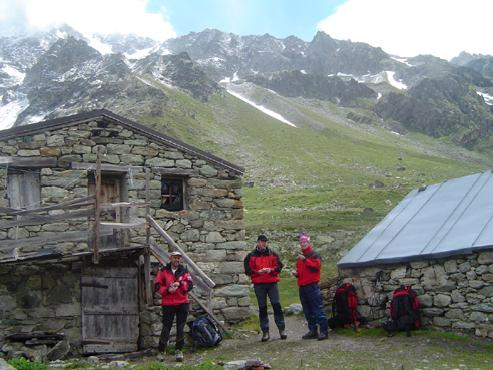
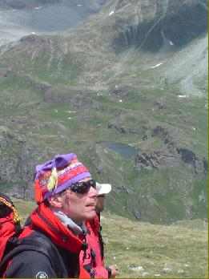
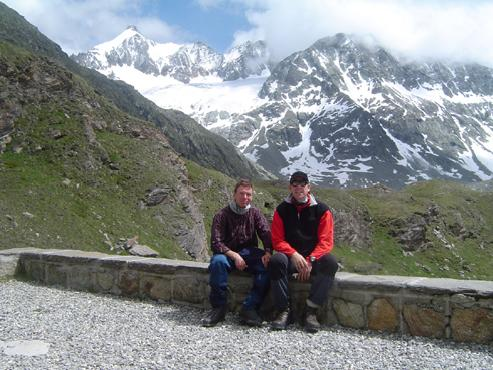
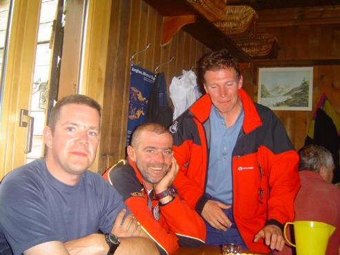

<!doctype html public "-//IETF//DTD HTML 2.0//EN"><html><head><meta http-equiv="imagetoolbar" content="no"><meta http-equiv="Content-Language" content="nl"><meta http-equiv="Content-Type" content="text/html; charset=windows-1252"><meta name="Generator" content="Microsoft FrontPage 5.0"><meta name="ProgId" content="FrontPage.Editor.Document"><title>Valpelline - Val d'Hérens 3</titl<!-- Matomo -->
<script type="text/javascript">
  var _paq = window._paq || [];
  /* tracker methods like "setCustomDimension" should be called before "trackPageView" */
  _paq.push(["setDocumentTitle", document.domain + "/" + document.title]);
  _paq.push(['trackPageView']);
  _paq.push(['enableLinkTracking']);
  (function() {
    var u="https://adsrv.innocraft.cloud/";
    _paq.push(['setTrackerUrl', u+'matomo.php']);
    _paq.push(['setSiteId', '51']);
    var d=document, g=d.createElement('script'), s=d.getElementsByTagName('script')[0];
    g.type='text/javascript'; g.async=true; g.defer=true; g.src='//cdn.innocraft.cloud/adsrv.innocraft.cloud/matomo.js'; s.parentNode.insertBefore(g,s);
  })();
</script>
<noscript><p></p></noscript>
<!-- End Matomo Code --></head>d><body bgcolor="#ffffff" link="#0066ff" vlink="#6633cc" text="#000000" topmargin=0 leftmargin=0 onmouseover="return true" onload="jh()"><script language="JavaScript" type="text/javascript"><!--
function ncm(){return false}function qp(){alert(unescape("Copyrights !  You are not allowed to download pictures - Het ophalen van afbeeldingen is verboden."));return false}function cn(){fg=event.button;if(fg==2||fg==3)qp()}function pq(e){return(e.which==3)?qp():true}vb=document.all;ls=document.getElementById;function jh(){if(document.images){for(zu=0;zu<document.images.length;zu++){if(vb){if(ls){document.images[zu].oncontextmenu=qp}else{document.images[zu].onmousedown=cn}}if(ls&&!vb){document.images[zu].onmouseup=ncm;document.images[zu].oncontextmenu=ncm}if(document.layers){document.images[zu].onmousedown=pq}}}}//--></script> <a name=top></a> <table border=0 cellpadding=0 cellspacing=0><tr><td></td><td></td><td></td><td></td><td></td></tr><tr><td width=9 height=9></td><td width=261></td><td width=5></td><td width=227></td><td width=4></td></tr><tr><td height=47></td><td width=497 height=47 colspan=4 rowspan=1 valign=top align=left> <table border=0 cellpadding=0 cellspacing=0><tr><td width=496 height=47 valign=top align=left bgcolor=#658c9a> <table border=0 cellpadding=0 cellspacing=0><tr><td width=3 height=3></td><td width=489></td><td width=3></td></tr><tr><td height=39></td><td width=489 height=39 valign=top align=left> <p align=center><center><font face="Arial" color=#ffffff size=3><B>Door Valpelline en Val d'Hérens, tussen Chamonix en Zermatt.</B></font><font face="Arial" color=#ffffff size=4><B><br></B></font><font face="Arial" color=#ffffff size=2><B>&copy; 2004 Peter De Smedt</B></font><font face="Arial" color=#ffffff size=4><B><br></B></font> </td><td></td></tr><tr><td height=3></td><td colspan=2></td></tr></table> </td></tr></table> </td></tr><tr><td height=4></td><td colspan=4></td></tr><tr><td height=34></td><td width=497 height=34 colspan=4 rowspan=1 valign=top align=left> <table border=0 cellpadding=0 cellspacing=0><tr><td width=496 height=34 valign=top align=left bgcolor=#c4cfd4> <table border=0 cellpadding=0 cellspacing=0><tr><td width=3 height=3></td><td width=489></td><td width=3></td></tr><tr><td height=26></td><td width=489 height=26 valign=top align=left> <p align=left><font face="Arial" color=#000000 size=3><B>Deel 3:&nbsp; </B></font><font face="Arial" size=2>Maandag 12/07/2004</font><font face="Arial" size=3><B><br></B></font> </td><td></td></tr><tr><td height=3></td><td colspan=2></td></tr></table> </td></tr></table> </td></tr><tr><td height=4></td><td colspan=4></td></tr><tr><td height=306></td><td width=497 height=306 colspan=4 rowspan=1 valign=top align=left> <table border=0 cellpadding=0 cellspacing=0><tr><td width=3 height=3></td><td width=489></td><td width=3></td></tr><tr><td height=298></td><td width=489 height=298 valign=top align=left> <p align=left><font face="Arial" color=#000000 size=2>Dag 1, Maandag 12/7/2004 vertrek van de tocht : het weer is wat betrokken, maar we hebben vandaag een verbindingstocht naar onze eerste hut.&nbsp; Over de Fenetre de Durand (2800m), zakken tot de vallei van het Lac de Mauvoisin op 2000m en stijgen tot de Cabane de Chanrion (2600m).&nbsp; Op het eerste zicht een rustig begin, maar daar heb ik mij dan toch redelijk aan mispakt.&nbsp; De eerste kilometer ging perfect in de jeep van Marin tot aan Glassier (het laatste dorp in de vallei op 1570m), vanaf daar 4 uur stijgen tot de Col.&nbsp; Na een half uurtje moeten we even rechtsomkeer maken (even verkeerd gelopen en moeten afdalen), dan gaat Marcel door zijn knie en is de tocht afgelopen voor Marcel.&nbsp; Door de overbelasting van zijn knie, voelt hij een constante pijn en wordt het moeilijk om dit zeven dagen vol te houden.&nbsp; Vervolgens wordt er nog een half uurtje afgesproken wat er wordt gedaan : gaat Marcel terug naar België en hoe, blijft Marcel ter plaatse, pikt hij ergens halverwege terug aan ????&nbsp; Ik geef hem de sleutel van mijn auto, want anders geraakt hij zelfs nog niet tot bij de dokter in Aosta.&nbsp; Vervolgens worden nog wat GSM-nummers uitgewisseld om elkaar op de hoogte te houden en nemen we afscheid van Marcel.&nbsp; De tocht is een half uur weg en van de vijf ingeschreven personen blijven er nog maar twee over.&nbsp; We hebben toch wel wat tijd verloren en het weer wordt er niet beter op, dus Marin trekt de gashendel open om zo snel mogelijk in de hut te zijn en hopen het droog te houden. <br></font> </td><td></td></tr><tr><td height=3></td><td colspan=2></td></tr></table> </td></tr><tr><td height=7></td><td colspan=4></td></tr><tr><td height=370></td><td width=493 height=370 colspan=3 rowspan=1 valign=top align=left> <div style="border-style: solid; border-width: 1"> </div> </td><td></td></tr><tr><td height=5></td><td colspan=4></td></tr><tr><td height=90></td><td width=497 height=90 colspan=4 rowspan=1 valign=top align=left> <table border=0 cellpadding=0 cellspacing=0><tr><td width=3 height=3></td><td width=489></td><td width=3></td></tr><tr><td height=83></td><td width=489 height=83 valign=top align=left> <p align=left><font face="Arial" color=#000000 size=2>Tot het Fenetre geraken we zonder problemen, onderweg nog even gegeten bij een vervallen boerderijtje, maar is het ondertussen wel beginnen sneeuwen en hagelen.&nbsp; Het motto van Marin in gedachte beginnen we aan de afdaling in een goed looptempo en met schrik voor meer regen en hagel doet hij er nog een schepje bovenop.&nbsp; <br></font> </td><td></td></tr><tr><td height=3></td><td colspan=2></td></tr></table> </td></tr><tr><td height=4></td><td colspan=4></td></tr><tr><td height=4></td><td width=261 height=348 colspan=1 rowspan=2 valign=top align=left> <div style="border-style: solid; border-width: 1"> </div> </td><td colspan=3></td></tr><tr><td height=344></td><td></td><td width=231 height=344 colspan=2 rowspan=1 valign=top align=left> <table border=0 cellpadding=0 cellspacing=0><tr><td width=3 height=3></td><td width=223></td><td width=3></td></tr><tr><td height=336></td><td width=223 height=336 valign=top align=left> <p align=left><font face="Arial" color=#000000 size=2>Beneden in de vallei aangekomen is er geen tijd om te rusten en wil Marin ineens tot de hut klimmen om toch droog aan te komen.&nbsp; Voor mij gaat het op de gewone stukken nog wel, maar als Marin wat binnenwegen begint te nemen, is voor mij de pijp uit en ga ik op eigen tempo naar boven.&nbsp; Rond 16.00h komen we aan in de hut en hebben we toch een pittige dag achter de rug (nog nooit zo blij geweest een Zwitserse vlag te zien).&nbsp; <br><br><br>Bij mij komen er wat twijfels of de conditie goed zit, de voorbereiding is allesbehalve goed geweest en de laatste twee weken voor de start toch opgezadeld gezeten met zeer stevige verkoudheid<br></font> </td><td></td></tr><tr><td height=3></td><td colspan=2></td></tr></table> </td></tr><tr><td height=4></td><td colspan=4></td></tr><tr><td height=90></td><td width=497 height=90 colspan=4 rowspan=1 valign=top align=left> <table border=0 cellpadding=0 cellspacing=0><tr><td width=3 height=3></td><td width=489></td><td width=3></td></tr><tr><td height=83></td><td width=489 height=83 valign=top align=left> <p align=left><font face="Arial" color=#000000 size=2>Verder zijn we maar met zijn drieën en dat zorgt er toch voor dat het tempo hoog ligt; dat blijkt ook uit het verdere verloop van de tocht : in veel hutten als laatste vertrokken en zonder problemen als eerste in de volgende hut.&nbsp; We verliezen natuurlijk weinig tijd met inbinden, stijgijzers aanbinden, eten, foto's enzovoorts (we zijn maar met twee) en we stappen toch ook flink door.&nbsp; <br></font> </td><td></td></tr><tr><td height=3></td><td colspan=2></td></tr></table> </td></tr><tr><td height=4></td><td colspan=4></td></tr><tr><td height=370></td><td width=493 height=370 colspan=3 rowspan=1 valign=top align=left> <div style="border-style: solid; border-width: 1"> </div> </td><td></td></tr><tr><td height=8></td><td colspan=4></td></tr><tr><td height=276></td><td width=497 height=276 colspan=4 rowspan=1 valign=top align=left> <table border=0 cellpadding=0 cellspacing=0><tr><td width=3 height=3></td><td width=489></td><td width=3></td></tr><tr><td height=268></td><td width=489 height=268 valign=top align=left> <p align=left><font face="Arial" color=#000000 size=2>'s Middags bij aankomst in de Chanrion, op het terras gezeten en goed bijgekomen, een dutje gedaan en aangeschoven aan tafel.&nbsp; Naast ons een groep oudere Fransen die een deel deden van de Hoge Route, deze groep zouden we nog een aantal dagen tegenkomen.&nbsp; Blijkbaar stond het wel goed in Frankrijk om deze route te doen, dus het gevolg was een hele hoop mensen die voor de eerste keer een hooggebergtetocht doen.&nbsp; Het eten was naar de omstandigheden uitstekend en meer dan voldoende.&nbsp; Over het algemeen was het eten tijdens deze tocht uitstekend, 's morgens brood met het nodige beleg en verschillende dranken (ruim voldoende om zelfs nog mee te nemen voor onderweg, dus hetgeen we meesleuren is eigenlijk niet nodig).&nbsp; In verschillende hutten krijgt men zelfs drinken voor onderweg (Stapthee, inbegrepen in de prijs) en in één hut hebben we zelfs een welkomstdrankje gekregen.&nbsp; 's Avonds altijd drie<br>gangen : soep, hoofdschotel en dessert, water was ook altijd te verkrijgen, maar meestal hebben we bier of wijn gedronken (bier was goedkoper).&nbsp; Dat bier goedkoper was, hebben we geleerd in de Cabane de Chanrion : als ne grote meneer een fles besteld, tot dat we de rekening kregen : 25 Zwitserse frank of 18 euro voor een flesje tafelwijn.<br></font> </td><td></td></tr><tr><td height=3></td><td colspan=2></td></tr></table> </td></tr><tr><td height=4></td><td colspan=4></td></tr><tr><td height=370></td><td width=493 height=370 colspan=3 rowspan=1 valign=top align=left> <div style="border-style: solid; border-width: 1"> </div> </td><td></td></tr><tr><td height=8></td><td colspan=4></td></tr><tr><td height=87></td><td width=497 height=87 colspan=4 rowspan=1 valign=top align=left> <table border=0 cellpadding=0 cellspacing=0><tr><td width=3 height=3></td><td width=489></td><td width=3></td></tr><tr><td height=79></td><td width=489 height=79 valign=top align=left> <p align=left><font face="Arial" color=#000000 size=2>De Cabane de Chanrion is een oude, mooie en niet zo grote hut, waar water is om te wassen en te drinken (dus de bussen kunnen gevuld worden).&nbsp; De soep was niet zo schitterend, maar voor de rest was alles picobello.&nbsp; De hut lag wel helemaal vol, dus 's morgens was het wel één grote puinhoop in de zalen, gangen en eetzaal.&nbsp; <br></font> </td><td></td></tr><tr><td height=3></td><td colspan=2></td></tr></table> </td></tr><tr><td height=3></td><td colspan=4></td></tr><tr><td height=31 style="border-top: 2px solid #658C9A"></td><td width=497 height=31 colspan=4 valign=top align=left style="border-top: 2px solid #658C9A"> <table border=0 cellpadding=0 cellspacing=0><tr><td width=3 height=3></td><td width=489></td><td width=3></td></tr><tr><td height=22></td><td width=489 height=22 valign=top align=left> <p align=left><font face="Arial" color=#000000 size=2><B>&lt;- <a target="_self" href="vlg-valp2004-b.html">Deel 2</a>&nbsp;&nbsp;&nbsp;&nbsp;&nbsp;&nbsp;&nbsp;&nbsp;&nbsp;&nbsp;&nbsp;&nbsp;&nbsp;&nbsp;&nbsp;&nbsp;&nbsp;&nbsp;&nbsp;&nbsp;&nbsp;&nbsp;&nbsp;&nbsp;&nbsp;&nbsp;&nbsp;&nbsp;&nbsp;&nbsp;&nbsp;&nbsp; </B></font> <font face="Arial" size="2"> <a href="file:///C:/Documents%20and%20Settings/Joris/Mijn%20documenten/My%20Webs/Hutten/index.html" target="_top"> Startpagina (Home)</a><b>&nbsp;&nbsp;&nbsp;&nbsp;&nbsp;&nbsp;&nbsp;&nbsp;&nbsp;&nbsp;&nbsp;&nbsp;&nbsp;&nbsp;&nbsp;&nbsp;&nbsp;&nbsp;&nbsp;&nbsp;&nbsp;&nbsp; <a target="_self" href="vlg-valp2004-d.html">Deel 4</a>&nbsp; -&gt;<br></b></font> </td><td></td></tr><tr><td height=3></td><td colspan=2></td></tr></table> </td></tr></table> <a name=bottom></a> <p>&nbsp;</p><p>&nbsp;</p><p>&nbsp;</p><p>&nbsp;</p></body></html>